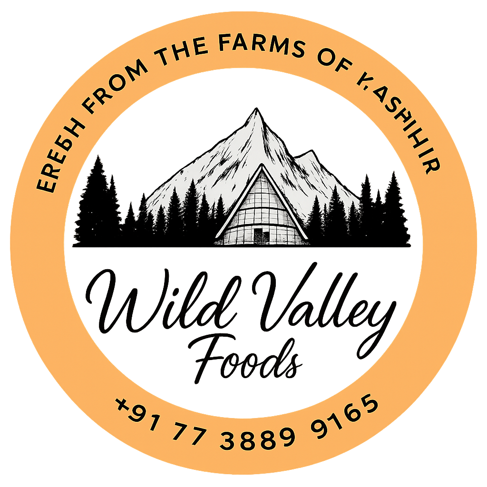

<section class="about-section">
    <div class="container">
        <div class="row">
            <!-- Content Column -->
            <div class="content-column col-lg-6 col-md-12 col-sm-12 order-2">
                <div class="inner-column">
                    <div class="sec-title">
                        <span class="title">About Valley Foods</span>
                        <h2>Bringing Authentic Kashmiri Dry Fruits to Your Doorstep</h2>
                    </div>
                    <div class="text">
                        Welcome to <b>Valley Foods</b>, your trusted source for premium Kashmiri dry fruits, saffron,
                        walnuts, and more — directly from the heart of Srinagar, Kashmir. With over a decade of
                        experience in the trade, we take pride in delivering products that are not only fresh and pure,
                        but also rich in the heritage of Kashmir.
                    </div>
                    <div class="text">
                        We are a <b>registered business with FSSAI certification</b>, ensuring every product meets
                        the highest standards of quality, purity, and safety. Our mission is to provide you with
                        authentic, handpicked Kashmiri specialties that enrich your health and lifestyle.
                    </div>
                    <div class="text">
                        From world-famous Kashmiri saffron to crunchy walnuts, almonds, figs, raisins, and other
                        nutritious dry fruits — we bring nature’s best to your home. Whether you are shopping for
                        personal use or gifting loved ones, Valley Foods ensures a premium experience every time.
                    </div>
                    <div class="btn-box">
                        <a routerLink="/contact-us" class="theme-btn btn-style-one">Contact Us</a>
                    </div>
                </div>
            </div>

            <!-- Image Column -->
            <div class="image-column col-lg-6 col-md-12 col-sm-12">
                    <figure class="image-1">
                        <a href="#" class="lightbox-image" data-fancybox="images">
                            
                        </a>
                    </figure>
            </div>
        </div>

        <div class="sec-title">
            <span class="title">Our Future Goal</span>
            <h2>Promoting the Taste & Heritage of Kashmir Worldwide</h2>
        </div>
        <div class="text">
            Our vision is to make authentic Kashmiri dry fruits and saffron accessible to every household across India
            and beyond. We aim to preserve the cultural richness of Kashmir while ensuring top-notch quality and
            customer satisfaction.
        </div>
        <div class="text">
            With a growing customer base and years of expertise, we are constantly innovating in packaging, delivery,
            and quality assurance to make sure you always get the best.
        </div>
        <div class="text">
            We are committed to becoming a global leader in dry fruits and saffron exports, while staying rooted in our
            values of trust, authenticity, and excellence.
        </div>
    </div>
</section>
